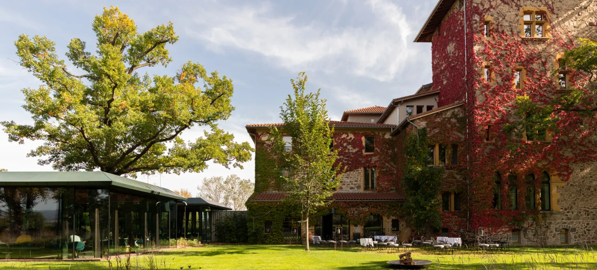

★★★★★ · Relais & Châteaux
15 rooms · 17 ha estate
№ 01 · On the estate · 2 min walk
Le Bois Dormant
Twelve rooms in the Grande Maison, three more in the converted Maison des Kakis wine press — all on the same 17‑hectare estate as the restaurant. The only lodging that turns the only logistics problem this trip has into a non‑problem.[1][6]
walk2 min · on site
rooms15 (12 + 3)
breakfast€40 pp
rating4.6 · 375 reviews
Michelin Green Star
Closed Dec 22 – Jan 14
View on troisgros.fr →